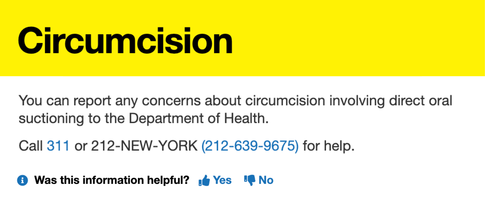
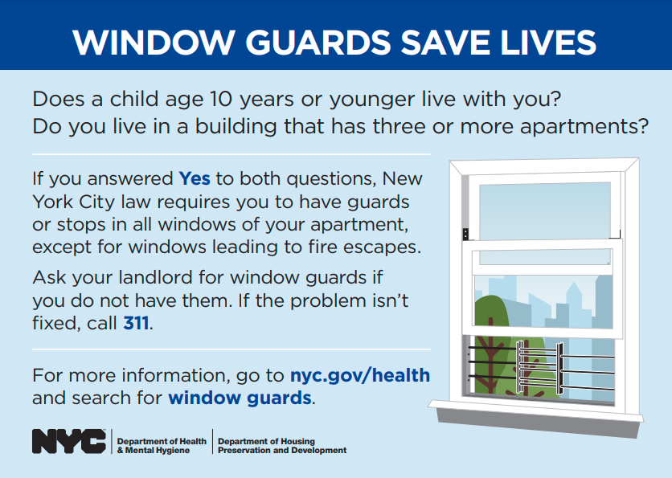

If you’re in a tenant group chat, chances are you’ve been urged to submit a 311 request. The reasons are varied and plenty: maybe there were mice sighted in the trash room. Maybe the elevators have been down for a while. Maybe you’re collectively sick of the scaffolding on your block.
Whatever the case, you’re probably familiar with NYC311 — more commonly referred to as 311 — and its nonemergency services. Any New Yorker is able to call, text, or submit an online request to 311 to ask the city to respond to a multitude of complaints, the most common causes being ① illegal parking, ② apartment maintenance, and ③ noise complaints.
That’s not even the tip of the iceberg of what 311 can do for you. Worried about the nutrition content of your child’s public school lunch? Make a School Food Complaint. See a poor soul about to get scammed by a game of three-card monte? Report a Street Con Game. You can report unsafe building demolition, mishandled horse-drawn carriages, or unsanitary tattoo parlors. It can get pretty specific!
Case in point.
311 isn’t an agency by itself. Rather, it’s like a switchboard operator. After you send a service request through the online portal, 311 forwards it to one of NYC’s numerous government agencies, who will then take over your complaint and (hopefully) see it through.
Between October 2020 and October 2025, the following agencies all had a hand in closing 311 service requests:
Some agencies are called upon more than others. Breaking it down by agency, the daily service request allocation looks something like this.
Over ¾ of the city's service requests are handled by the New York Police Department, the Department of Housing Preservation and Development, and the Department of Sanitation. This makes sense, given that the most requested services are in response to ① illegal parking, ② apartment maintenance, and ③ noise complaints.
For the most part, service requests handle residential issues. Between October 2020 and October 2025, the most commonly reported issues are as follows, measured by the number of logged complaints.
Geographical location can determine complaint volume as well. Within each borough and each neighborhood, the daily number of service requests can differ drastically, along with their associated wait times.
This is a map of the city with borders drawn along zip codes, color coded by the daily average number of 311 service requests made in each area from October 2020 to October 2025.
The bluer the area, the higher the daily average. Inversely, the paler it is, the less service requests are made. Overall, in the last five years, each zip code made an average of 41.6 complaints a day.
We then break it down by the average time it takes for 311 to close a service request, not taking into account cases that may still be unresolved. The redder the area, the longer the wait.
If you look closely between the two, there's a slight inverse relationship between the maps. On most occasions, the darker the blue on the previous map, the lighter the red on this one. That's not a cause-and-effect relationship, though. The more service requests you submit, the more opportunities 311 will have to solve your case faster, so the lower your overall average wait time.
You can’t see the area of zip code 10153 because it spans only one single city block in Manhattan, off the southeast corner of Central Park. However, 10153 has the longest average service request wait time in all of NYC, at 4487.38 hours (~187 days). Its daily average complaint count is around a third at 0.34, far from the lowest complaint count in NYC. So what’s going on here?
When sorting all of 10153’s service requests by the longest wait times, every single top complaint had the same category: Mobile Food Vendor. This piqued my interest. I then listed out every single Mobile Food Vendor complaint this zip code had, a list of 311 entries, and investigated further. This is what I found:
Since this dataset began — which technically is 2010, but we’re only working with 2020~present — someone or someones at 767 5th Avenue have been submitting service requests about food vendors with what I can only assume is a personal vendetta. In August 2023 alone, 17 food vendor complaints were submitted. In 2024, one was submitted the day after Christmas; in 2025, one was submitted a day after New Year’s.
On January 11, 2025, every single one of these requests were closed. Practically not a single one was marked as resolved before then, so one can only assume what happened on that fateful day. Given that the average wait was 187 days, and many of these complaints were registered years before January 11, 2025, 187 is a reasonable number to accompany what I’m certain is a very reasonable story happening at 767 5th Ave.
(On January 15, 2025, a Mobile Food Vendor service request was filed from 767 5th Avenue.)
To balance out the inverse relationship, we weigh wait times by the number of service requests, giving us a better estimate of how long exactly each zip code waits for 311 to resolve their issues. In other words, areas with very few complaints no longer swing the results with extreme averages — instead, this map “shrinks” their estimates toward the citywide average, highlighting true differences in performance rather than random noise.
This highlights a few areas that have prominently slower wait times, with a sluggish Northern Queens, Midtown Manhattan, and Upper West Side.
Geographical divisions aside, what about wait times when it comes to complaint types? We've established that for one Manhattan city block, getting the Department of Health and Mental Hygiene to respond to a food vendor complaint can be a Herculean task. Could that pattern follow for the rest of the city?
The longest request type it takes to resolve is Window Guard, a requirement for buildings that meet certain conditions to install protective guards on their apartment windows, at an average wait of 786 days. That's just over two years.
An infographic from the HPD about installing window guards.
This long wait makes sense. Installing window guards usually require specialists to come in for construction, as well as a bouncing back-and-forth between 311, building management, and the tenant.
Tens of thousands of hours is still a lot, though. Thankfully, the more commonly filed complaints don't take nearly as long. Let's look back on the top 10 most common service requests, and see how their wait times measure up.
Half of the common complaints are cleared up in ~3 hours or less. Almost all of them are resolved within a week. Unsanitary Conditions, which address various residential complaints like mice infestations or mold growth, take the longest to resolve at ~24 days.
So if your biggest concerns are everyday apartment maintenance requests, or a car parked in the wrong spot, you're in luck: that's nothing a 311 request can't fix in a matter of hours. But if you happen to live in Manhattan, at the zip code 10153, and you've got a problem with the halal cart on the corner, you're just going to have to be patient.
All data used was taken from this NYC OpenData dataset: 311 Service Requests from 2010 to Present. The expandable Nutshell tool was made by Nicky Case.